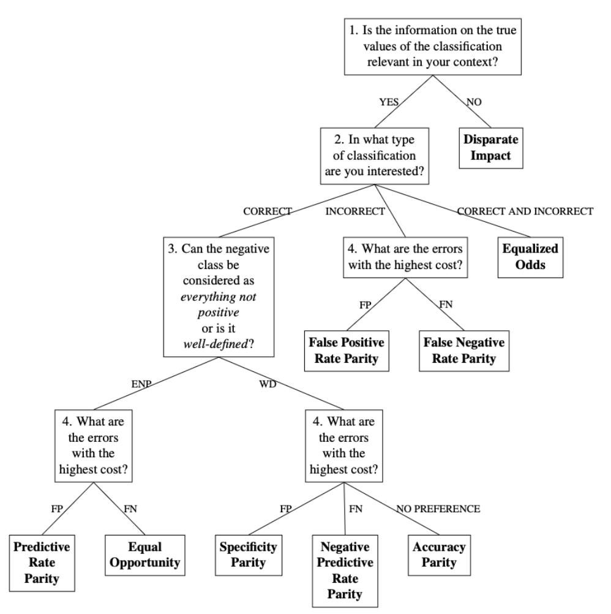

R/fairness_selection.R
fairness_selection.RdThis function aims to provide a fairness measure tailored to a
specific context and dataset by answering the questions in the developed
decision-making workflow. The questions within the decision-making workflow
are based on observable data characteristics, the properties of fairness
measures and the information required for their calculation. However, these
questions are posed to the user in an easily understandable manner, requiring
no statistical background or in-depth knowledge of the fairness measures.
Obtainable fairness measures include Disparate Impact, Equalized Odds,
Predictive Rate Parity, Equal Opportunity, Specificity Parity, Negative
Predictive Rate Parity, Accuracy Parity, False Positive Rate Parity and False
Negative Rate Parity. The function returns an object of class
jfaFairnessSelection that can be used with associated print()
and plot() methods.
fairness_selection(
q1 = NULL,
q2 = NULL,
q3 = NULL,
q4 = NULL
)a character indicating the answer to the first question of the
decision-making workflow ('Is the information on the true values of the
classification relevant in your context?'). If NULL (the default)
the user is presented with the first question of the decision-making
corresponding to their desired answer. Possible options are NULL
(default), 1 (to indicate 'Yes'), or 2 (to indicate 'No').
a character indicating the answer to the second question of the
decision-making workflow ('In what type of classification are you
interested?'). If NULL (the default) the user is presented with the
second question of the decision-making workflow and can respond
interactively by selecting the numerical value corresponding to their
desired answer. Possible options are NULL (default), 1 (to
indicate 'Correct Classification'), 2 (to indicate 'Incorrect
Classification'), or 3 (to indicate 'Correct and Incorrect
Classification').
a character indicating the answer to the third question of the
decision-making workflow ('Can the negative class be considered as
everything not positive or is it well defined?'). If NULL (the
default) the user is presented with the third question of the
decision-making workflow and can respond interactively by selecting the
numerical value corresponding to their desired answer. Possible options
are NULL (default), 1 (to indicate 'Everything not
positive'), or 2 (to indicate 'Well-defined'). To understand the
concept of a negative class defined as Everything Not Positive, consider
the example of evaluating customer satisfaction for a service, where
customers can either be satisfied or dissatisfied. Dissatisfaction,
however, can stem from various reasons (such as 'not satisfied due to
shipping delays', 'not satisfied because the product or its features are
malfunctioning', or 'not satisfied due to unhelpful customer service').
Despite the different reasons, they all fall under the category of 'not
satisfied' and can be grouped together without further distinction. On the
other hand, to understand the concept of a negative class as Well Defined,
consider the example of classifying bank transactions as either fraudulent
or legitimate. In this case, the negative class simply refers to all
fraudulent transactions, without needing to analyze why a transaction is
considered non-legitimate (i.e. fraudulent).
a character indicating the answer to the fourth question of the
decision-making workflow ('What are the errors with the highest cost?').
If NULL (the default) the user is presented with the fourth
question of the decision-making workflow and can respond interactively by
selecting the numerical value corresponding to their desired answer.
Possible options are NULL (default), 1 (to indicate 'False
Positive'), 2 (to indicate 'False Negative'), or 3 (to
indicate 'No preference').
An object of class jfaFairnessSelection containing:
The abbreviation of the selected fairness measure.
The name of the selected fairness measure.
Several fairness measures can be used to assess the fairness of AI-predicted classifications. These include:
Disparate Impact. See Friedler et al. (2019), Feldman et al. (2015), Castelnovo et al. (2022) and Büyük, S. (2023) for a more detailed explanation of this measure.
Equalized Odds. See Hardt et al. (2016), Verma et al. (2018) and Büyük, S. (2023) for a more detailed explanation of this measure.
False Positive Rate Parity. See Castelnovo et al. (2022) (under the name Predictive Equality), Verma et al. (2018) and Büyük, S. (2023) for a more detailed explanation of this measure.
False Negative Rate Parity. See Castelnovo et al. (2022) (under the name Equality of Opportunity), Verma et al. (2018) and Büyük, S. (2023) for a more detailed explanation of this measure.
Predictive Rate Parity. See Castelnovo et al. (2022) (under the name Predictive Parity) and Büyük, S. (2023) for a more detailed explanation of this measure.
Equal Opportunity. See Hardt et al. (2016), Friedler et al. (2019), Verma et al. (2018) and Büyük, S. (2023) for a more detailed explanation of this measure.
Specificity Parity. See Friedler et al. (2019), Verma et al. (2018) and Büyük, S. (2023) for a more detailed explanation of this measure.
Negative Predictive Rate Parity. See Verma et al. (2018) and Büyük, S. (2023) for a more detailed explanation of this measure.
Accuracy Parity. See Friedler et al. (2019) and Büyük, S. (2023) for a more detailed explanation of this measure.
The fairness decision-making workflow below aids in choosing which fairness measure is appropriate for the situation at hand.

Büyük, S. (2023). Automatic Fairness Criteria and Fair Model Selection for Critical ML Tasks, Master Thesis, Utrecht University.
Castelnovo, A., Crupi, R., Greco, G. et al. (2022). A clarification of the nuances in the fairness metrics landscape. In Sci Rep 12, 4209. doi:10.1038/s41598-022-07939-1
Feldman, M., Friedler, S. A., Moeller, J., Scheidegger, C., & Venkatasubramanian, S. (2015). Certifying and removing disparate impact. In Proceedings of the 21th ACM SIGKDD International Conference on Knowledge Discovery and Data Mining. doi:10.1145/2783258.2783311
Friedler, S. A., Scheidegger, C., Venkatasubramanian, S., Choudhary, S., Hamilton, E. P., & Roth, D. (2019). A comparative study of fairness-enhancing interventions in machine learning. In Proceedings of the Conference on Fairness, Accountability, and Transparency. doi:10.1145/3287560.3287589
Hardt M. , Price E., Srebro N. (2016). Equality of opportunity in supervised learning. In Advances in neural information processing systems, 29. doi:10.48550/arXiv.1610.02413
Verma S., Rubin J. (2018). Fairness definitions explained. In Proceedings of the international workshop on software fairness, 1–7. doi:10.1145/3194770.3194776
# Workflow leading to accuracy parity
fairness_selection(q1 = 1, q2 = 1, q3 = 2, q4 = 3)
#> The selected fairness measure is Accuracy Parity
#>
#> The answer to the first question (q1) is: Yes (1)
#> The answer to the second question (q2) is: Correct Classification (1)
#> The answer to the third question (q3) is: Well-Defined (2)
#> The answer to the fourth question (q4) is: No Preference (3)